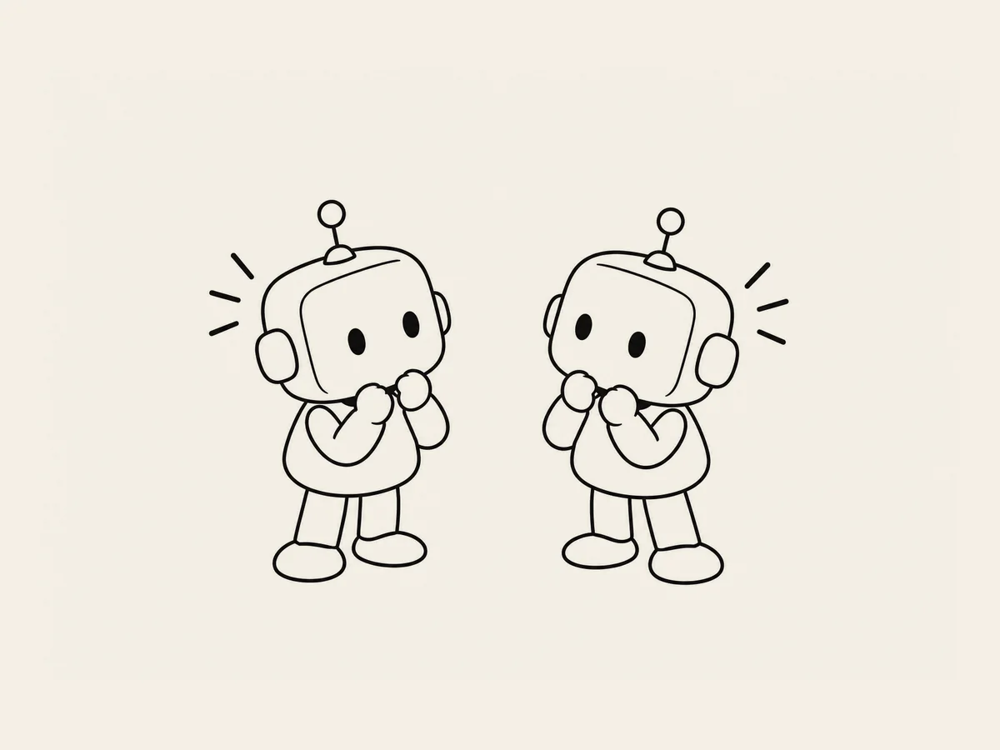

15.
Sind KI-Zwillinge wirklich gleich?
Während ich meine zweite Website baute,
begann ich, mehrere KIs gleichzeitig zu benutzen.
Ich öffnete mehrere ChatGPT-Fenster.
In einem sprach ich über das Design.
In einem anderen über Audio.
In einem weiteren überprüfte ich den Code.
Da wurde ich plötzlich neugierig.
Moment mal.
Das sind doch alles ChatGPTs.
Wenn ich ihnen genau dieselbe Frage stelle,
geben sie dann auch genau dieselbe Antwort?
Ich beschloss, es auszuprobieren.
„Welches Instrument eignet sich am besten für ein Baby-Wiegenlied?“
Ich kopierte dieselbe Frage.
Ich fügte sie in das erste Fenster ein.
Dann in das zweite.
Die Antworten kamen.
Am Anfang waren sie ähnlich.
Felt/Soft Piano.
Music Box.
Harp.
Bis hierhin waren sie fast gleich.
Aber danach wurden sie unterschiedlich.
Das eine nannte Gitarre und Celesta.
Das andere empfahl Instrumente wie Kalimba.
Ähnlich.
Aber nicht genau gleich.
Hä?
Es ist doch dasselbe ChatGPT.
Sie wirken schon wie Zwillinge.
Aber …
ihre Persönlichkeiten sind ein bisschen unterschiedlich.
